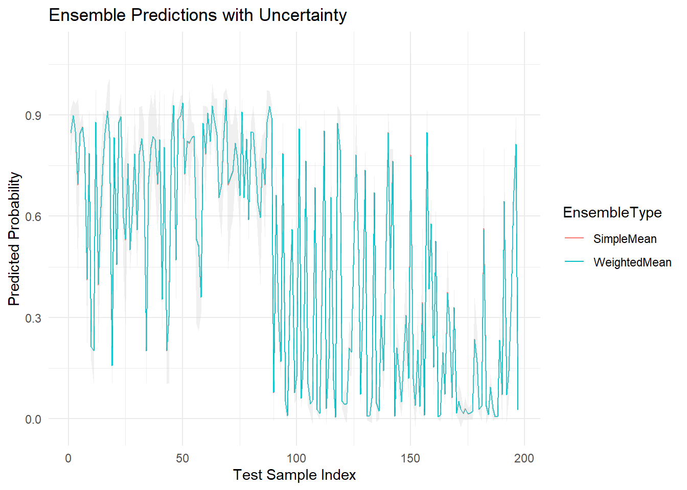
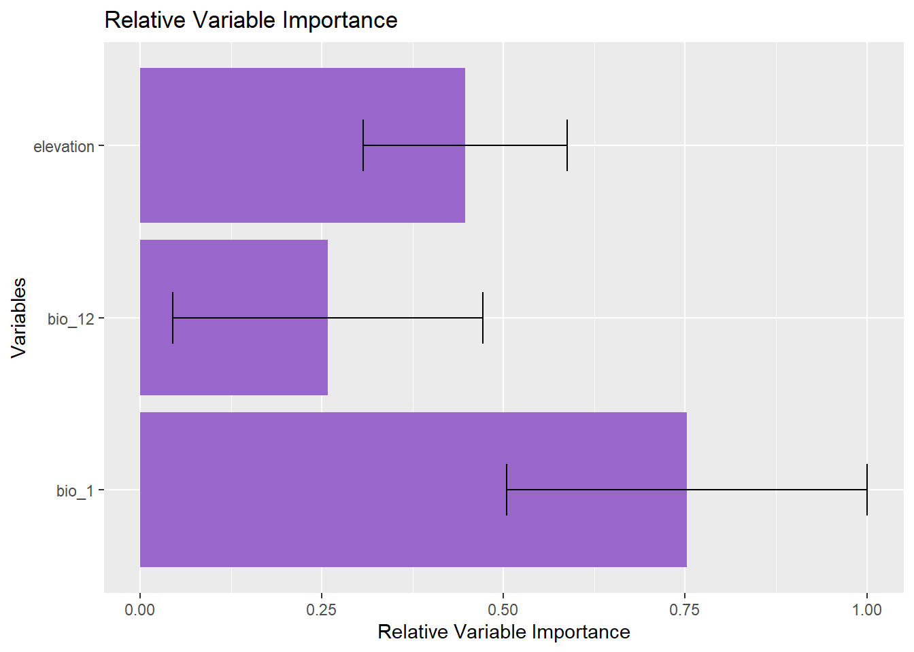
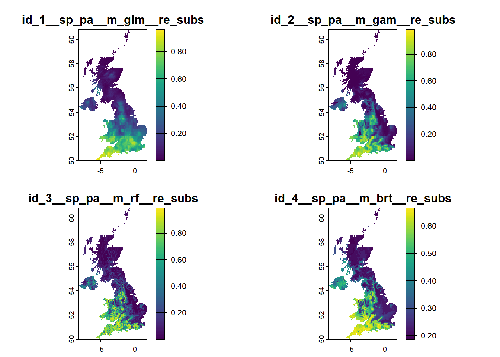

# Combine predictions into a data frame
models_predict_df <- data.frame(GLM = as.numeric(glm_predict_test),
GAM = as.numeric(gam_predict_test),
BRT = as.numeric(brt_predict_test),
RF = as.numeric(rF_predict_test))
# Simple average ensemble prediction
ensemble_predict_simple <- rowMeans(models_predict_df)Ensemble Model Fitting
Species distribution models (SDMs) are, at best, imperfect approximations of reality. They rely on human-defined mathematical structures to represent complex ecological processes, forcing observational data into simplified functional forms that may not fully capture the underlying biological mechanisms. Each model is a filtered view, shaped by assumptions, algorithmic constraints, and the quality of the available data.
Exploring different algorithms for SDM has shown that every method carries its own strengths and limitations—no single model consistently outperforms others across species, regions, or scenarios. This recognition has led to the growing adoption of ensemble modelling, which combines predictions from multiple algorithms to generate more robust, reliable, and generalisable estimates of species’ potential distributions.
The core idea behind ensemble modelling is that each individual model captures a mix of signal (i.e. captures some of the genuine ecological patterns) and noise (errors, biases, or uncertainties). By aggregating across models, ensembles aim to amplify the signal while dampening the noise—leading to improved predictive performance and more defensible ecological inference.
By combining multiple models, ensemble approaches aim not only to amplify the signal and suppress the noise, but also to provide a more reliable central tendency (e.g. mean or consensus prediction) across different modelling approaches. Crucially, ensembles do more than just improve average predictive performance, as they also allow us to quantify uncertainty more effectively. By comparing variation among model predictions, we can estimate the degree of confidence in our forecasts and highlight areas of high or low agreement. This makes ensembles particularly valuable for decision-making and risk assessment under uncertainty, such as conservation planning or climate impact assessments.
1. Ensemble Modelling Strategies
Ensemble modelling in species distribution modelling (SDM) is not a single method but a framework that can incorporate different strategies for combining predictions. Broadly, ensemble methods can be grouped into three categories, depending on how models are weighted and how uncertainty is handled:
1.1 Simple averaging
The most basic ensemble method calculates the unweighted average of predictions from multiple models: • Every algorithm contributes equally to the final prediction. • Assumes all models are equally informative and reliable. • Easy to implement and interpret. When to use: When you have little prior reason to favour one model over another, or want a straightforward consensus.
1.2 Weighted averaging
In this approach, models are weighted according to performance metrics such as AUC, TSS, or cross-validated deviance: • Better-performing models contribute more heavily to the final ensemble. • Weights can be calculated based on internal validation (e.g., cross-validation AUC), independent test data, or expert judgment. When to use: When you want to prioritize models with stronger support from the data, while still retaining a diverse model set.
1.3 Consensus-based voting or thresholding
Here, ensemble predictions are made by voting across binary outputs (e.g. habitat suitable/unsuitable): • A site is predicted suitable if a majority of models agree. • Can also use stricter rules (e.g. unanimity) or soft thresholds (e.g. 70% agreement). • Useful when decisions are binary (e.g. protect vs not protect) or when interpretation of continuous probabilities is unclear. When to use: In policy or management contexts that require clear thresholds for decision-making.
NotePractical Considerations for Ensemble Modelling
Aligning model outputs
Before combining predictions from different SDM algorithms, it’s essential to ensure they are aligned:
- All models should be projected onto the same spatial extent, resolution, and use the same environmental layers.
- Predictions must be on the same scale (e.g. probabilities between 0 and 1).
- Model names should be clearly matched to their corresponding prediction layers or files to ensure reproducibility.
Including uncertainty in ensembles
While most ensemble implementations focus on generating a central prediction (e.g. mean or weighted mean), it is equally important to assess and communicate uncertainty:
- Include proxies for model disagreement, such as standard deviation (SD) across predictions.
- Calculate quantiles or prediction intervals, which are especially useful when communicating risk or making conservative decisions.
- It is good practice to report both the ensemble mean and an uncertainty layer (e.g. SD or interquartile range) in any spatial output intended for planning or publication.
2 Manual Ensemble Modelling
After fitting multiple SDM algorithms and generating predictions on the same test dataset or raster stack, we can manually construct ensemble predictions by combining these outputs.
2.1 Prepare model predictions and evaluation metrics
For this example, suppose we have predicted probabilities from four based on GLM, GAM, BRT and randomForest models on the test data: glm_predict_test, gam_predict_test, brt_predict_test, rF_predict_test and their respective AUC values from validation: auc_glm, auc_gam, auc_brt, auc_rF
2.2 Simple average ensemble
2.3 Weighted average ensemble
# Create weight vector based on AUCs
models_auc_values <- c(auc_glm, auc_gam, auc_brt, auc_rF)
weights_auc <- models_auc_values / sum(models_auc_values)
# Weighted average ensemble prediction
ensemble_predict_weighted <- as.numeric(as.matrix(models_predict_df) %*% weights_auc)2.4 Quantify ensemble uncertainty
ensemble_predict_sd <- apply(models_predict_df, 1, sd)2.4 Visualise ensemble prediction and uncertainty
library(ggplot2)
library(tidyr)
# Create data frame for plotting
plot_df <- tibble(
Observation = 1:length(ensemble_predict_simple),
SimpleMean = ensemble_predict_simple,
WeightedMean = ensemble_predict_weighted,
Uncertainty = ensemble_predict_sd
) %>%
pivot_longer(cols = c(SimpleMean, WeightedMean),
names_to = "EnsembleType", values_to = "Prediction")
# Plot predictions with uncertainty ribbon
ggplot(plot_df, aes(x = Observation, y = Prediction, color = EnsembleType)) +
geom_line() +
geom_ribbon(aes(ymin = Prediction - Uncertainty, ymax = Prediction + Uncertainty),
fill = "grey80", alpha = 0.3, color = NA) +
labs(title = "Ensemble Predictions with Uncertainty",
y = "Predicted Probability",
x = "Test Sample Index") +
theme_minimal()
3. Packages for Constructing Ensemble SDMs in R
R offers several packages for building and combining species distribution models, each with different strengths, model algorithms, and ways of handling ensemble predictions. Three commonly used tools are biomod2, sdm, and ENMeval.
3.1 Using biomod2
biomod2 is a powerful and flexible package designed specifically for ensemble species distribution modelling. It supports a wide range of modelling algorithms (e.g., GLM, GAM, RF, Maxent), provides built-in tools for data preprocessing and evaluation, and includes robust ensemble functionalities.
Key Features:
- Supports up to ten different SDM algorithms
- Automates cross-validation and model tuning
- Allows weighted ensemble predictions
- Can output uncertainty layers (e.g. confidence intervals, variance)
biomod2 basic Workflow
Here is an outline of how to run ensemble SDMs using biomod2:
biomod2 step 1: Format the input data
To use biomod2, we need to provide presence–absence data coded as 1s and 0s, corresponding geographic coordinates (longitude and latitude), a stack of environmental predictor layers, a species name, and optional also background or absence points (if not provided will be generated by the package). Here we use the data generated earlier in the worshop (and stored also as saves/shared data for this worshop) and reformat then into the required object.
library(biomod2)
library(sf)
library(terra)
library(dplyr)
# Load and prepare presence data
presence_df <- presence_sf %>%
mutate(resp = 1) %>% # Add response variable (1 = presence)
st_coordinates() %>% # Extract coordinates
as.data.frame() %>% # Convert to data frame
bind_cols(resp = 1) # Append response column again for clarity
# Load and prepare background (pseudo-absence) data
background_df <- background_sf %>%
mutate(resp = 0) %>% # Add response variable (0 = background)
st_coordinates() %>% # Extract coordinates
as.data.frame() %>% # Convert to data frame
bind_cols(resp = 0) # Append response column again for clarity
# Combine coordinates of presence and background points
sdm_xy <- bind_rows(
st_coordinates(presence_sf) %>% as.data.frame(), # Presence coordinates
st_coordinates(background_sf) %>% as.data.frame() # Background coordinates
)
# Create corresponding response vector (1 = presence, 0 = background)
sdm_resp <- c(rep(1, nrow(presence_sf)), rep(0, nrow(background_sf)))
# Rename coordinate columns to match biomod2 requirements
colnames(sdm_xy) <- c("lon", "lat")
# Select focal environmental layers
env_select <- Env_UK_stack[[c("bio_1", "bio_12", "elevation")]]
# Convert terra SpatRaster to RasterStack (required by biomod2)
env_ras <- raster::stack(env_select)
# Format data for biomod2 modelling
biomod_data <- BIOMOD_FormatingData(
resp.var = sdm_resp, # Vector of 1s and 0s
expl.var = env_ras, # Environmental predictors as RasterStack
resp.xy = sdm_xy, # Coordinates of all points
resp.name = "Rhinolophus_hipposideros", # Species name (used to label outputs)
PA.nb.rep = 0 # No pseudo-absence generation needed (already supplied)
)
-=-=-=-=-=-=-=-=-=-= Rhinolophus_hipposideros Data Formating -=-=-=-=-=-=-=-=-=-=
! Response variable name was converted into Rhinolophus.hipposideros
!!! Some data are located in the same raster cell.
Please set `filter.raster = TRUE` if you want an automatic filtering.
! No data has been set aside for modeling evaluation
! Some NAs have been automatically removed from your data
-=-=-=-=-=-=-=-=-=-=-=-=-=-=-=-=-=-= Done -=-=-=-=-=-=-=-=-=-=-=-=-=-=-=-=-=-=biomod2 step 2: Define and fit individual models
# Set default model options (can be customised per algorithm)
mod_options <- bm_ModelingOptions(data.type = 'binary',
models = c("GLM", "RF", "GBM", "GAM"),
strategy = 'default')
# Run SDMs using selected algorithms
# Fit individual species distribution models using biomod2
myBiomodModelOut <- BIOMOD_Modeling(
bm.format = biomod_data, # Formatted input data
modeling.id = "AllModels", # Unique ID for this modelling run
models = c("GLM", "RF", "GBM", "GAM"), # SDM algorithms to fit
# Cross-validation settings
CV.strategy = "random", # Randomly split data into train/test
CV.nb.rep = 2, # Number of cross-validation replicates
CV.perc = 0.7, # 70% data used for training, 30% for testing
# Model optimization and evaluation
OPT.strategy = "bigboss", # Optimisation strategy (biomod2 default)
metric.eval = c("TSS", "ROC"), # Evaluation metrics to use
var.import = 2, # Number of permutations for variable importance
seed.val = 42 # Random seed for reproducibility
)biomod2 step 3: Build ensemble model
# Inspect model evaluation metrics for each algorithm and CV replicate
get_evaluations(myBiomodModelOut) These evaluation results show that some models (e.g. RF) tend to have higher ROC/TSS etc., meaning better discrimination and more confidence; others may be lower, which suggests more caution or lower predictability under your environmental data.
biomod2 step 4: Ensemble prediction and uncertainty mapping
Here we combine models, project them spatially, generate ensemble outputs (mean probability, weighted mean, and uncertainty), then forecast ensemble to new environmental rasters
# Project individual models to environmental raster layers
model_proj <- BIOMOD_Projection(
bm.mod = myBiomodModelOut,
new.env = env_ras, # raster stack of environmental predictors
proj.name = "current", # a label for this projection scenario
binary.meth = "TSS", # thresholding method for binary maps
compress = FALSE
)
-=-=-=-=-=-=-=-=-=-=-=-=-= Do Single Models Projection -=-=-=-=-=-=-=-=-=-=-=-=-=
> Building clamping mask
> Projecting Rhinolophus.hipposideros_allData_RUN1_GLM ...
> Projecting Rhinolophus.hipposideros_allData_RUN1_RF ...
> Projecting Rhinolophus.hipposideros_allData_RUN1_GBM ...
> Projecting Rhinolophus.hipposideros_allData_RUN2_GLM ...
> Projecting Rhinolophus.hipposideros_allData_RUN2_RF ...
> Projecting Rhinolophus.hipposideros_allData_RUN2_GBM ...
> Projecting Rhinolophus.hipposideros_allData_allRun_GLM ...
> Projecting Rhinolophus.hipposideros_allData_allRun_RF ...
> Projecting Rhinolophus.hipposideros_allData_allRun_GBM ...
-=-=-=-=-=-=-=-=-=-=-=-=-=-=-=-=-=-= Done -=-=-=-=-=-=-=-=-=-=-=-=-=-=-=-=-=-=# Build the ensemble using all cross-validation replicates
myEnsembleOut <- BIOMOD_EnsembleModeling(
bm.mod = myBiomodModelOut,
em.by = "all", # combine all CV runs
em.algo = c("EMmean", "EMcv", "EMwmean"), # different ensemble methods: mean, coefficient of variation (CV=uncertainty), weighted mean
metric.select = "TSS", # metric for selecting which models to include
metric.select.thresh = 0.5 # only include individual models with TSS ≥ 0.5
)
-=-=-=-=-=-=-=-=-=-=-=-=-=-= Build Ensemble Models -=-=-=-=-=-=-=-=-=-=-=-=-=-=
! all models available will be included in ensemble.modeling
! Ensemble Models will be filtered and/or weighted using validation dataset (if possible). Please use `metric.select.dataset` for alternative options.
> Evaluation & Weighting methods summary :
TSS over 0.5
!!! Removed models using the Full dataset as ensemble models cannot merge repetition dataset (RUN1, RUN2, ...) with Full dataset unless em.by = 'PA+run'.
> mergedData_mergedRun_mergedAlgo ensemble modeling
> Mean of probabilities by TSS ...
> Coef of variation of probabilities by TSS ...
original models scores = 0.598 0.66 0.679 0.652 0.635 0.647
final models weights = 0.154 0.17 0.175 0.168 0.164 0.167
> Probabilities weighting mean by TSS ...Error in {: task 1 failed - "task 1 failed - "task 1 failed - "cannot open the connection"""# Apply the ensemble to the projections
myEnsembleProj <- BIOMOD_EnsembleForecasting(
bm.em = myEnsembleOut, # ensemble modeling object
bm.proj = model_proj # projections from individual models
)
-=-=-=-=-=-=-=-=-=-=-=-= Do Ensemble Models Projection -=-=-=-=-=-=-=-=-=-=-=-=Error in eval(expr, envir, enclos): object 'myEnsembleOut' not found# Visualise mean suitability, CV, and weigthed suitabilty onto map
# Extract layers from biomod2 ensemble projection
ens_stack <- get_predictions(myEnsembleProj)Error in h(simpleError(msg, call)): error in evaluating the argument 'obj' in selecting a method for function 'get_predictions': object 'myEnsembleProj' not found# Rename for clarity (adjust names if needed)
names(ens_stack) <- c("Suitability_mean", "CV", "Suitability_weighted")Error: object 'ens_stack' not found# Make 0-values in the weighted layer transparent
# Set values of 0 to NA in the weighted layer
ens_stack$Suitability_weighted[ens_stack$Suitability_weighted == 0] <- NAError: object 'ens_stack' not found# Plot all three side-by-side
plot(ens_stack,
main = c("Mean Suitability", "Cross-Validation Variation", "Weighted Suitability"),
colNA = "transparent", # Show NA (0-values) as transparent
nc = 3, # Number of columns in layout
mar = c(2, 2, 2, 4)) # MarginsError in h(simpleError(msg, call)): error in evaluating the argument 'x' in selecting a method for function 'plot': object 'ens_stack' not found3.2 Using sdm
The sdm package in R is another powerful tool for species distribution modeling that supports many algorithms, cross-validation, and ensemble modeling. It is user-friendly and integrates well with spatial data.
Key Features:
- Supports multiple algorithms (GLM, GAM, RF, Maxent, etc.)
- Easy setup of cross-validation and replication
- Built-in ensemble modeling and projection
- Outputs predictions and variable importance metrics
sdm basic Workflow
Here is an outline of how to run ensemble SDMs using sdm:
sdm step 1: Format the input data
library(sdm)
library(terra)
library(sf)
library(dplyr)
# Convert tibbles of pre-prepared sdm training and testing data subsets to base data.frames
sdmData_df_train <- as.data.frame(sdm_df_train)[, c("pa", "bio_1", "bio_12", "elevation")]
sdmData_df_test <- as.data.frame(sdm_df_test)[, c("pa", "bio_1", "bio_12", "elevation")]
# Make sure response variable is numeric
sdmData_df_train$pa <- as.numeric(as.character(sdmData_df_train$pa))
sdmData_df_test$pa <- as.numeric(as.character(sdmData_df_test$pa))
# Define formula using only selected predictors
formula_selected <- pa ~ bio_1 + bio_12 + elevation
# Create sdmData object using the pre-prepared sdm training and testing data subsets
sdmData_df <- sdm::sdmData(
pa ~ bio_1+bio_12+elevation,
train = sdmData_df_train,
test = sdmData_df_test
)sdm step 2: Fit models with cross-validation
# Fit SDMs using multiple algorithms with replication (e.g., CV)
# Available algorithms: 'glm', 'rf', 'brt', 'svm', 'mars', 'gam', etc.
sdm_model <- sdm::sdm(
formula = pa ~ bio_1 + bio_12 + elevation,
data = sdmData_df,
methods = c("glm", "gam", "rf", "brt"), # SDM algorithms
test.percent = 0 # use external test data supplied in sdmData_df
)sdm step 3: Evaluate model performance
# View evaluation metrics: AUC, TSS, ...
eval_sdm <- sdm::getEvaluation(sdm_model, stat = c("AUC", "TSS", "sensitivity", "specificity"))
print(eval_sdm) modelID AUC TSS sensitivity specificity
1 1 0.817 0.5189 0.9114 0.6075
2 2 0.871 0.6591 0.9114 0.7477
3 3 0.896 0.6497 0.9114 0.7383
4 4 0.860 0.6018 0.8354 0.7664All four algorithms perform reasonably well at predicting species presence and absence, but there are differences in their strengths. The GLM (model 1) has very high sensitivity, meaning it rarely misses actual presences, but lower specificity, so it predicts some false presences. In contrast, the Random Forest (model 3) achieves the best overall balance (highest TSS) and good AUC, indicating it correctly predicts both presences and absences reliably. This illustrates why no single model is perfect, and why ensemble modelling — combining predictions from multiple algorithms — can improve robustness and account for different strengths and weaknesses of individual models.
sdm step 4: Variable importance
# Assess variable importance
varimp_sdm <- getVarImp(sdm_model, id = 1:3) # Adjust ID to match your models if needed
plot(varimp_sdm)
sdm step 5: Project model spatially
# Select focal environmental layers
env_select <- Env_UK_stack[[c("bio_1", "bio_12", "elevation")]]
# Project model onto environmental space
sdm_proj <- predict(sdm_model, newdata = env_select, type="ensemble")
# Plot predictions
plot(sdm_proj)
NoteLiterature
Araújo, M. B., & New, M. (2007). Ensemble forecasting of species distributions. Trends in Ecology and Evolution, 22(1), 42–47.
Dormann Carsten, F., Calabrese Justin, M., Guillera‐Arroita, G., Matechou, E., Bahn, V., Bartoń, K., . . . Hartig, F. (2018). Model averaging in ecology: a review of Bayesian, information‐theoretic and tactical approaches for predictive inference. Ecological Monographs, 88(4): 485–504. doi:10.1002/ecm.1309
Hao, T., Elith, J., Lahoz-Monfort, J. J., & Guillera-Arroita, G. (2020). Testing whether ensemble modelling is advantageous for maximising predictive performance of species distribution models. Ecography, 43(4), 549–558. doi:10.1111/ecog.04890
Naimi, B., & Araújo, M. B. (2016). sdm: a reproducible and extensible R platform for species distribution modelling. Ecography, 39(4), 368–375. doi:10.1111/ecog.01881
Thuiller, W., Lafourcade, B., Engler, R., & Araújo, M. B. (2009). BIOMOD - A platform for ensemble forecasting of species distributions. Ecography, 32(3), 369–373. doi/10.1111/j.1600-0587.2008.05742.x
Zurell, D., Zimmermann, N. E., Gross, H., Baltensweiler, A., Sattler, T., & Wüest, R. O. (2020). Testing species assemblage predictions from stacked and joint species distribution models. Journal of Biogeography, 47(1), 101–113. doi:10.1111/jbi.13608